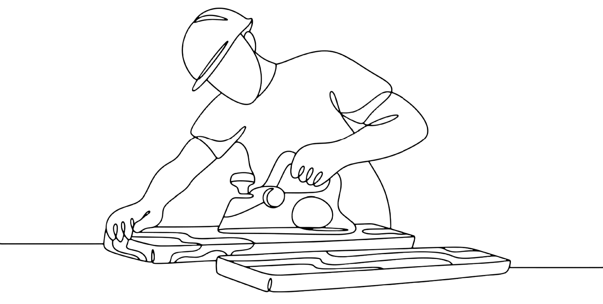
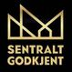
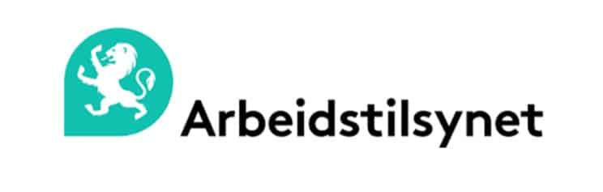
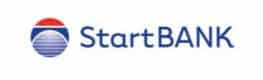

Kvalitet
Vi streber alltid etter høy kvalitet, uansett om kunden er privat eller offentlig. Vi prioriterer HMS og sikkerhet, og gir grundig opplæring til mannskapet for å sikre forsvarlig drift.
Etablert i 2007 av Svenn Cato Hagen. I dag er vi femten medarbeidere med egne fagarbeidere innen riving, betongsaging, kjerneboring, graving, forskaling og støping.

Catos Betongsaging AS utfører jobb for entreprenører, byggherrer og private, med prosjekter store som små. Med over 35 års erfaring innen betongsaging, riving, radonsikring og asbestfjerning vet vi hva vi driver med. Alle nødvendige sertifikater innehas for kjerneboring, asbestsanering, betongsaging, innendørs graving og riving, utvidelse av kjeller og mer.
Asbestfjerning og behandling krever spesielle sertifiseringer, fordi det kan være svært helseskadelig. Vi tar asbest med høyeste forsiktighet og fjerner det på en trygg måte. Bærende mur- og stålvegger kan være kompliserte å jobbe med – med lang erfaring og riktig verktøy sørger vi for en god og kvalitetssikret utførelse.
I 2007 ble Catos Betongsaging etablert av Svenn Cato Hagen. Han hadde allerede den gang 20 års erfaring som utførende innen kjerneboring, betongsaging, riving og miljøsanering, og som prosjektleder med ansvar for kalkulasjon, drift og økonomi i prosjekter.
Kjernevirksomheten er fortsatt betongsaging, kjerneboring og riving med miljøsanering. I tillegg omfatter den graving, forskaling, tømring, snekring, støping og sliping, stålmontasje og sveis. Vi har ansatt egne fagarbeidere innen disse feltene. De siste årene har vi også anskaffet rivingsrobot, elektrisk gravemaskin med null utslipp og sprøytemalingsutstyr, for å kunne utføre jobbene markedet og lovverket krever.
I dag har vi femten svært dyktige medarbeidere, hvor flere har mer enn 34 års erfaring fra bransjen. Det gir oss evnen til å finne løsninger på utfordringene som ofte dukker opp i hverdagen. Vi har full digitalisert økonomistyring, med oversikt over serviceoppdrag og prosjekter i kalender for hele organisasjonen. Sjekkliste før oppstart av arbeid krysses av og sendes fortløpende til ansvarlig representant hos oppdragsgiver – en prosess vi startet 2. januar 2017.
Vi er sentralgodkjent for ansvarsrett og har egen godkjenning innen asbestsanering. I tillegg er vi godkjent opplæringsbedrift for gjenvinningsfaget, som inkluderer riving, miljøsanering og betongsaging, gjennom opplæringskontoret for anleggs- og bergfagene.
Vi leverer også støping, graving, snekkertjenester, forskaling og trefelling – som drenering av grunnmur, støttemur, planering av gårdsplass, kjellerutvidelse og senking av kjellergulv. Med elektriske minigravere og rivingsmaskiner blir det ikke forurensning inne.
Ute på prosjekter oppstår det ofte problemer som må løses. Da mobiliserer vi og utvikler oss. Våre folk har en kultur for å tenke kreativt og være løsningsorienterte. Alt går – det kan ta litt lengre tid, men det løser seg alltid. Kunden skal alltid kunne stole på vurderingene våre, og på at vi gjør vårt beste hver eneste dag.
HMS og sikkerhet er i fokus når vi gjør jobben. Tanken på omgivelsene, de ansatte og kundene er viktig for oss. Derfor er vi opptatt av at de ansatte har riktig utstyr for jobben, og opplæring og kunnskap i å bruke det.
Verdier
Vi streber alltid etter høy kvalitet, uansett om kunden er privat eller offentlig. Vi prioriterer HMS og sikkerhet, og gir grundig opplæring til mannskapet for å sikre forsvarlig drift.
Våre folk har en kultur for å tenke kreativt og være løsningsorienterte. Vi blir rett og slett inspirert av å finne løsninger.
Vi møter alle med en positiv holdning. Og vi løser alt. Alltid. Med et smil.
Vi opptrer ryddig overfor kunder, kolleger og utenforstående, og bestreber ryddighet i biler, på kontoret og ute på anlegget.
Vår styrke er effektivitet gjennom god planlegging og riktig utstyr. Det oppnår vi med et arbeidsmiljø der alle yter det lille ekstra.

Utstyr
Vi har elektrisk minigraver på 1,9 tonn og elektrisk rivingsrobot på 1,75 tonn. Begge gir null utslipp inne i bygg, og roboten er bare 78 cm bred, så den passer gjennom normale døråpninger. I tillegg har vi betongsager, kjerneboremaskiner, wiresaging, sandblåseutstyr og sprøytemalingsutstyr.
Dokumentasjon
Sentralgodkjenning, egen asbestgodkjenning og miljøsertifisering. Attestene ligger på firmaets egen nettside.

Innen betongsaging, riving og miljøsanering, for privat, bedrift og offentlige bygg.

Egen godkjenning og arbeidsattest for asbestsanering.
Sertifisert siden 2018, med årlig klimaregnskap og offentlig miljørapport.

Registrert leverandør, med attest for skatt og merverdiavgift.
Medlem av MEF.
For gjenvinningsfaget gjennom OKAB: riving, miljøsanering og betongsaging.
Neste steg
Ring, eller send en kort beskrivelse av oppdraget. Vi gir uforpliktende tilbud etter befaring.
Be om tilbud eller ring 90 05 02 81 i åpningstiden
Skisse · svarene er hentet fra firmaets egen nettside